Behaviour of dipspeaks package in a Fake Light Curve¶
In this notebook, we will generate a synthetic light curve made up of purely random data. Any dips or peaks found in this curve should be attributable to noise rather than genuine astrophysical signals.
[1]:
#LOAD PACKAGES
import dipspeaks
from dipspeaks import *
If you need help, contact graciela.sanjurjo@ua.es.
In the next cell we will create a fake light curve and save it within the currect directory¶
[2]:
n = np.arange(0,20000,5)
df = pd.DataFrame({
"time": n, # a simple numeric sequence for the time column
"counts": np.random.randint(0, 100, len(n)), # random integers between 0 and 99
"srate": np.random.randint(20, 80, len(n) )*0.10 # random integers between 0 and 99
})
df.to_csv("test_lc", index=False, sep=' ')
In the next four cells we will run our detection algorithm for different sn: 0.5, 0.25, 0.1 and 0.05.¶
[3]:
lc="./test_lc"
tpeaks_to_clean, tdips_to_clean, tlcreb,_,_ = detect_dips_and_peaks(lc, snr=0.5 ,index_time=0, index_rate=1, index_error_rate=2, show_plot = True)
Creating syntetic data
- done!
Rebin light curve and syntetic lightcurve to the desired sn
Done!
Calculate bases for dip/peak detection
- done!
- detecting dips and peaks within light curve and syntetic lightcurve
- done!
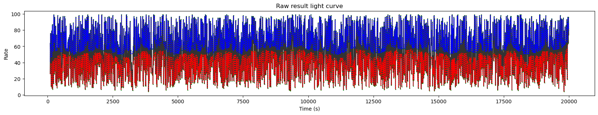
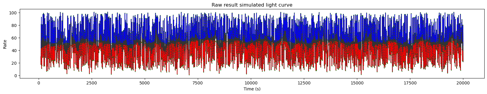
Train auto-encoders in syntetic data
DIPS----------------------------------------------------------------------------------------
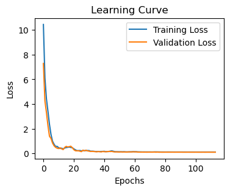
35/35 ━━━━━━━━━━━━━━━━━━━━ 0s 1ms/step
35/35 ━━━━━━━━━━━━━━━━━━━━ 0s 494us/step
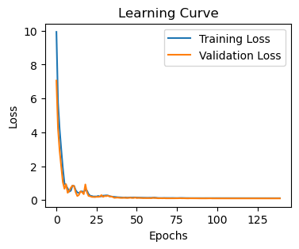
35/35 ━━━━━━━━━━━━━━━━━━━━ 0s 1ms/step
35/35 ━━━━━━━━━━━━━━━━━━━━ 0s 482us/step
PEAKS---------------------------------------------------------------------------------------
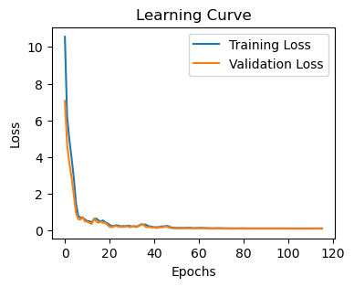
35/35 ━━━━━━━━━━━━━━━━━━━━ 0s 2ms/step
35/35 ━━━━━━━━━━━━━━━━━━━━ 0s 557us/step
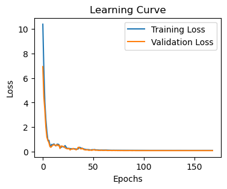
35/35 ━━━━━━━━━━━━━━━━━━━━ 0s 1ms/step
35/35 ━━━━━━━━━━━━━━━━━━━━ 0s 475us/step
Simulation:
Peaks per second: 0.0006 percentage of rejected peaks: 0.99
Dips per second: 0.0006 percentage of rejected dips: 0.9892
Result:
Peaks per second: 0.001 percentage of rejected peaks: 0.9819 probability of detected peaks: 0.0
Dips per second: 0.0008 percentage of rejected dips: 0.9864 probability of detected dips: 0.2
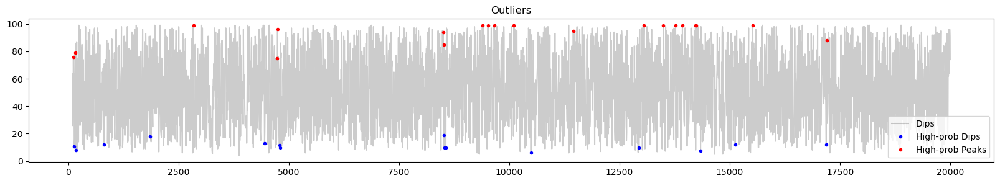
[4]:
tpeaks_to_clean, tdips_to_clean, tlcreb,_,_ = detect_dips_and_peaks(lc, snr=0.25 ,index_time=0, index_rate=1, index_error_rate=2, show_plot = True)
Creating syntetic data
- done!
Rebin light curve and syntetic lightcurve to the desired sn
Done!
Calculate bases for dip/peak detection
- done!
- detecting dips and peaks within light curve and syntetic lightcurve
- done!
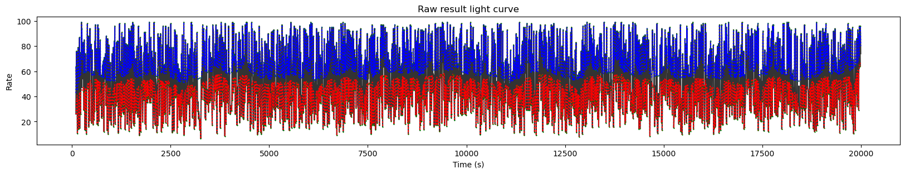
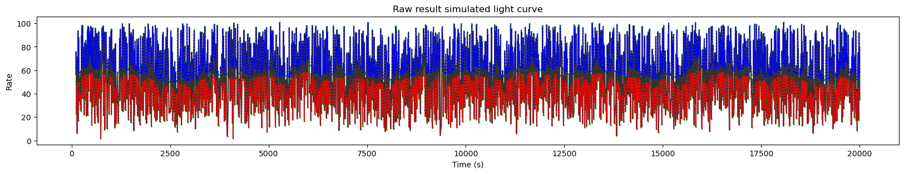
Train auto-encoders in syntetic data
DIPS----------------------------------------------------------------------------------------
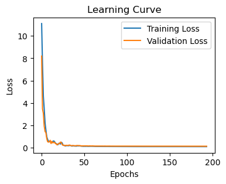
31/31 ━━━━━━━━━━━━━━━━━━━━ 0s 490us/step
31/31 ━━━━━━━━━━━━━━━━━━━━ 0s 1ms/step
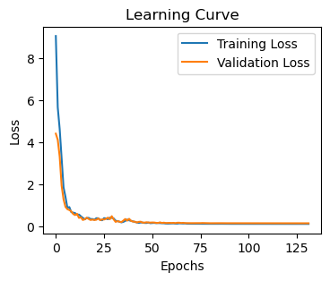
31/31 ━━━━━━━━━━━━━━━━━━━━ 0s 488us/step
31/31 ━━━━━━━━━━━━━━━━━━━━ 0s 458us/step
PEAKS---------------------------------------------------------------------------------------
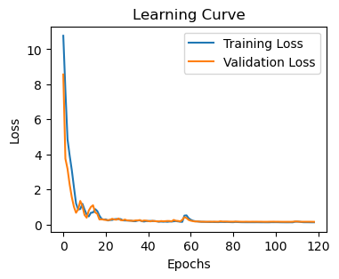
32/32 ━━━━━━━━━━━━━━━━━━━━ 0s 1ms/step
31/31 ━━━━━━━━━━━━━━━━━━━━ 0s 494us/step
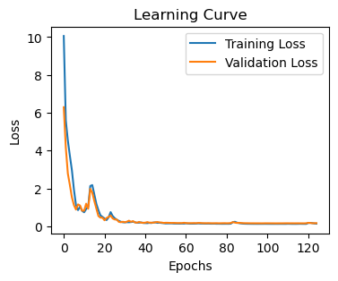
32/32 ━━━━━━━━━━━━━━━━━━━━ 0s 1ms/step
32/32 ━━━━━━━━━━━━━━━━━━━━ 0s 495us/step
Simulation:
Peaks per second: 0.0006 percentage of rejected peaks: 0.989
Dips per second: 0.0005 percentage of rejected dips: 0.9899
Result:
Peaks per second: 0.0009 percentage of rejected peaks: 0.9825 probability of detected peaks: 0.0
Dips per second: 0.0005 percentage of rejected dips: 0.9896 probability of detected dips: 0.03
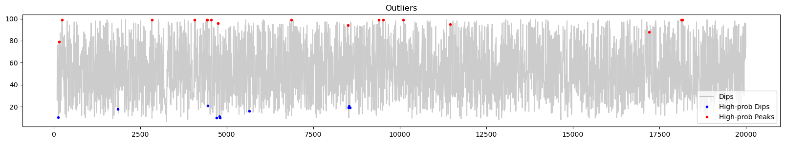
[5]:
tpeaks_to_clean, tdips_to_clean, tlcreb,_,_ = detect_dips_and_peaks(lc, snr=0.1 ,index_time=0, index_rate=1, index_error_rate=2, show_plot = True)
Creating syntetic data
- done!
Rebin light curve and syntetic lightcurve to the desired sn
Done!
Calculate bases for dip/peak detection
- done!
- detecting dips and peaks within light curve and syntetic lightcurve
- done!
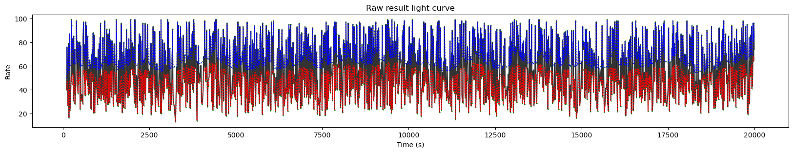
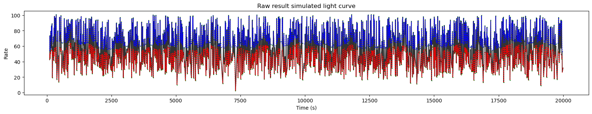
Train auto-encoders in syntetic data
DIPS----------------------------------------------------------------------------------------
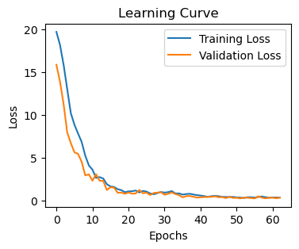
17/17 ━━━━━━━━━━━━━━━━━━━━ 0s 2ms/step
18/18 ━━━━━━━━━━━━━━━━━━━━ 0s 633us/step
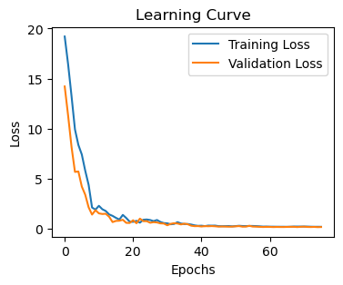
17/17 ━━━━━━━━━━━━━━━━━━━━ 0s 2ms/step
17/17 ━━━━━━━━━━━━━━━━━━━━ 0s 639us/step
PEAKS---------------------------------------------------------------------------------------
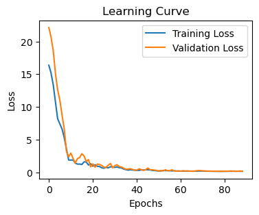
16/16 ━━━━━━━━━━━━━━━━━━━━ 0s 2ms/step
17/17 ━━━━━━━━━━━━━━━━━━━━ 0s 639us/step
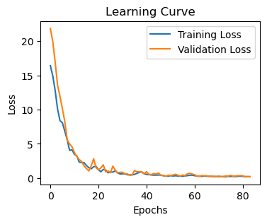
16/16 ━━━━━━━━━━━━━━━━━━━━ 0s 2ms/step
16/16 ━━━━━━━━━━━━━━━━━━━━ 0s 711us/step
Simulation:
Peaks per second: 0.0003 percentage of rejected peaks: 0.9883
Dips per second: 0.0003 percentage of rejected dips: 0.9884
Result:
Peaks per second: 0.0006 percentage of rejected peaks: 0.9792 probability of detected peaks: 0.0
Dips per second: 0.0002 percentage of rejected dips: 0.9927 probability of detected dips: 0.0
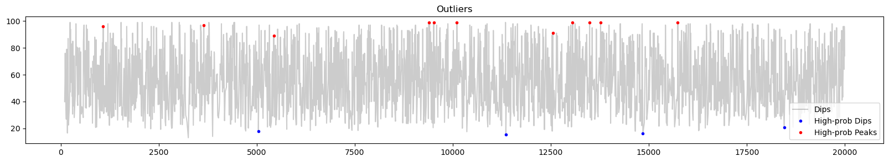
[ ]: